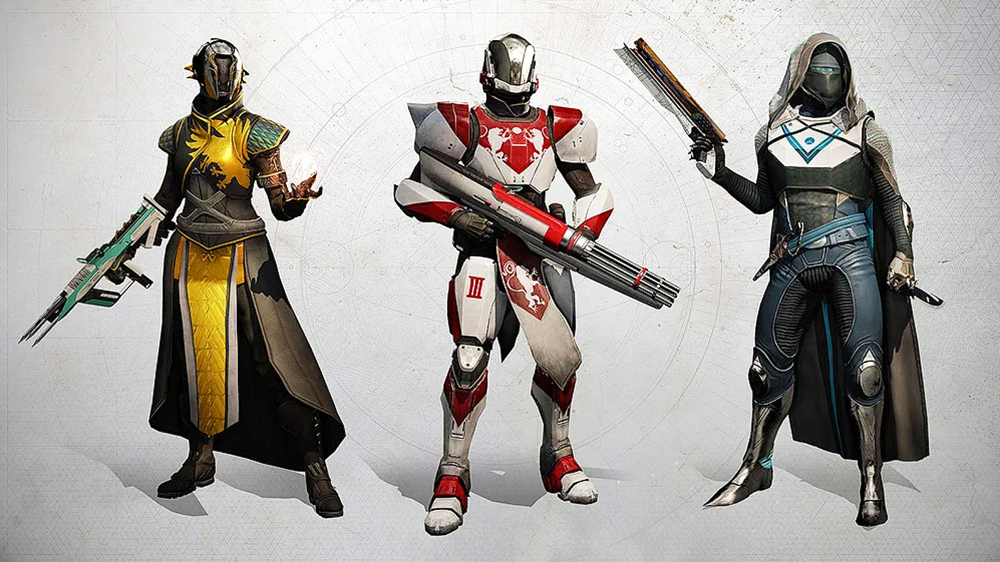

There are three classes that you can make your guardian: Warlock, Titan, and Hunter. Eventually, if
you continue to play, you'll probably end up having one of each. Each class has their own specialty,
detailed in the next three guides.
Each class has 4 abilities: Grenade, Melee, Class, and Super.
- Your Grenade ability is exactly what it sounds like, and generally tends to function as either
an AOE ad clear tool, or a smaller radius high damage nuke, depending on the grenade type and
your build (building into it, it can often do both). What grenade types are available depends on
your subclass. Grenade types are, however, shared across
classes; void warlocks, void titans, and void hunters, for example, all have access to the same
pool of void grenades they can equip.
- Melee abilities vary wildly in their effects, but are united in the fact that most are useful at
close range. Unlike grenades, each class and subclass combination has its own melee abilities.
Given this, it's hard to make generalizations about them all. I would highly recommend
not using the auto-melee key that is binded by default, and instead opting to bind
charged melee and uncharged melee to seperate buttons.
- Class abilities, unsurprisingly, depend on your class. Warlocks have a stationary rift they can
place at their feet that either heals or increases damage, Titans have a barrier they can place
down, and Hunters have a dodge roll that either reloads your weapon or gives melee energy.
- Supers are your standard ultimate abilities. Like melee abilities, each class and subclass
combination has their own unique supers. Most of them can be sorted to two categories: nukes and
roaming. Nukes are massive damage on demand, and roaming supers tend to last for a while, make you
harder to kill while its active, and temporarily give you access to particular special abilities. Most
roaming supers tend to be ass though, and so unless they have a specific reason to run them,
most people tend to just run nukes.